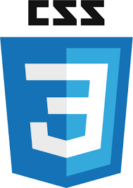

Producing high quality websites and exceptional user experience
As a Web Developer, I am looking for an opportunity to demonstrate and develop my skills & knowledge
3 Words that sum me up...
Innovative
Talented
Motivated
Creativity & Ideas
I would like to work with clients and put my creativity & ideas to the ultimate test by
transforming end users experiences and helping organisations grow through the use of the internet.
Front End Developer

I have a real passion for coding & designing browsers with HTML(5), CSS(3), JavaScript and a touch of JQuery.
I love coding from scratch as it enables me to learn the in's and out's of Web Development.
With this in mind, I am also able to work with Angular.js, PHP, Python and front end frameworks.
What I can contribute to your organisation
My enthusiasm and passion for building and designing websites has enabled me to become experienced and confident in using common HTML5 API's,
adding advanced graphics to an HTML5 page using Canvas elements as well as Scalable Vector Graphics to enhance user experience with the inclusion of animations.
As a proactive & motivated person I believe my professionalism and web developing capabilities will make a significant contribution to your
organisation.
Want to work together?
I aspire to develop my career and work alongside other specialists within this field. I feel my determination
to succeed and innovative ideas drive me to overcome obstacles and actively find solutions. I am currently seeking a Web Developer
position within a company that can develop my existing skill set and knowledge and wants to attract talented people.